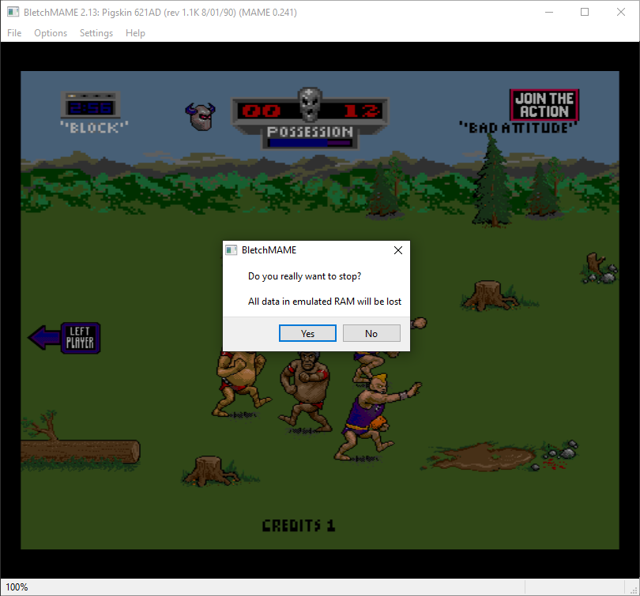
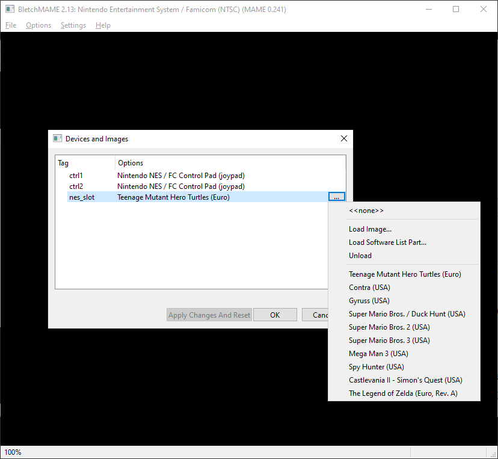
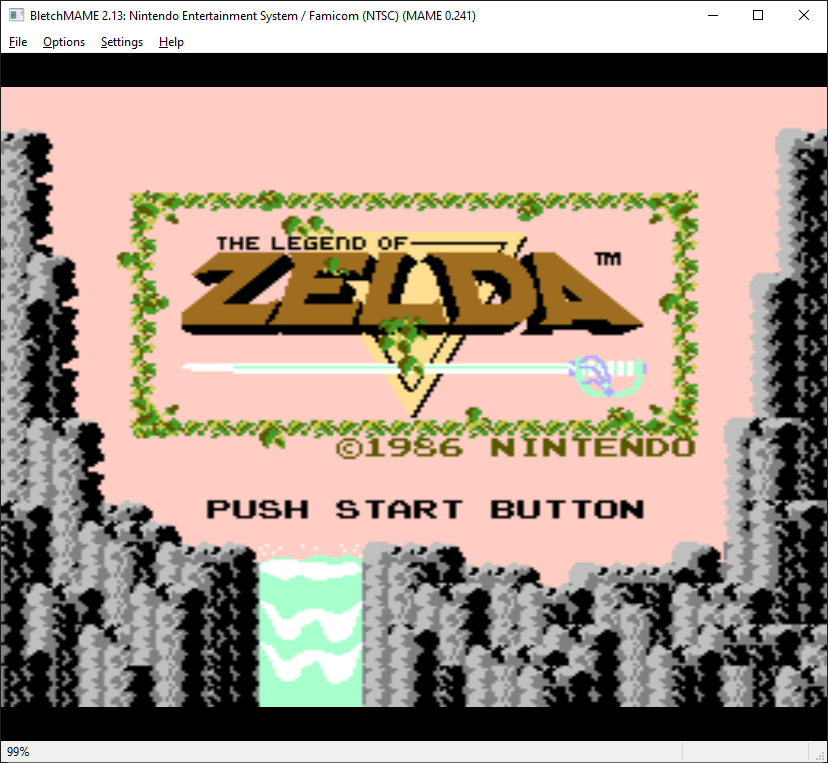
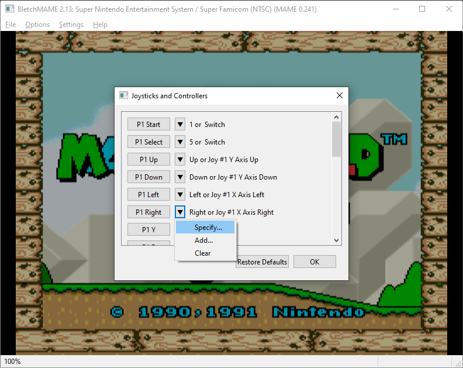
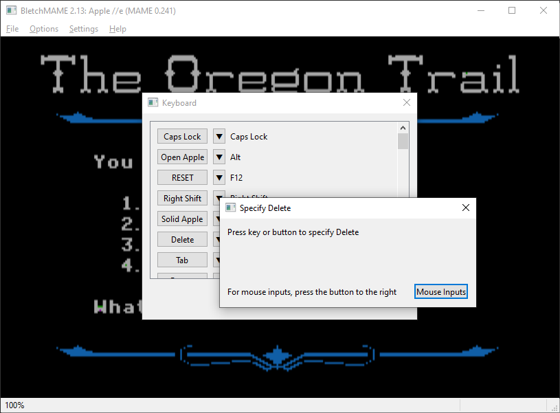

BletchMAME is a new experimental front end for MAME. Unlike existing front ends (which function as launchers, keeping MAME's internal UI), BletchMAME replaces the internal MAME UI with a more conventional point and click GUI. While BletchMAME is intended to support all machines supported by MAME, it should be particularly suitable to computer emulation.
BletchMAME is currently very bleeding edge. Expect breaking changes, bugs, all of the usual stuff when working with a new project. If the lack of version numbers, bad error messages and lack of clarity of what builds of MAME we are compatible with, well sorry...
|
|
|
|
|  |  |
 |
 |
|  |  |  |  |
Currently BletchMAME only works with a special fork of MAME with the required "worker UI" hooks that enable the replacement of the internal MAME UI. We are distributing modified versions of MAME with the "worker UI" changes for the time being. Hopefully this won't be the case forever, and there will be a time when BletchMAME can be used with official releases of MAME.
Also, BletchMAME downloads are currently only for 64-bit Windows, even though it should be portable to non-Windows platforms. (Any takers here?)
BletchMAME is licensed under the GNU GPL.
| BletchMAME Executable | BletchMAME.zip |
| MAME executable | mame64.zip |
The BletchMAME sources are hosted on GitHub here.
The sources for the required fork of MAME can be obtained here.
{kind=link}
{kind=link}
{kind=link}
{kind=link}
{kind=link}